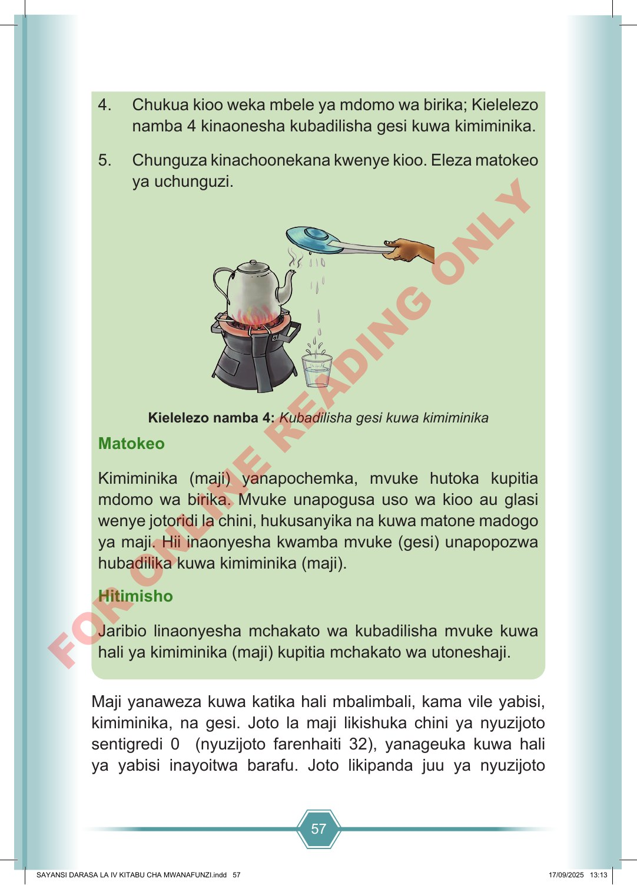

57 4. Chukua kioo weka mbele ya mdomo wa birika; Kielelezo namba 4 kinaonesha kubadilisha gesi kuwa kimiminika. 5. Chunguza kinachoonekana kwenye kioo. Eleza matokeo ya uchunguzi. Kielelezo namba 4: Kubadilisha gesi kuwa kimiminika Matokeo Kimiminika (maji) yanapochemka, mvuke hutoka kupitia mdomo wa birika. Mvuke unapogusa uso wa kioo au glasi wenye jotoridi la chini, hukusanyika na kuwa matone madogo ya maji. Hii inaonyesha kwamba mvuke (gesi) unapopozwa hubadilika kuwa kimiminika (maji). Hitimisho Jaribio linaonyesha mchakato wa kubadilisha mvuke kuwa hali ya kimiminika (maji) kupitia mchakato wa utoneshaji. Maji yanaweza kuwa katika hali mbalimbali, kama vile yabisi, kimiminika, na gesi. Joto la maji likishuka chini ya nyuzijoto sentigredi 0 (nyuzijoto farenhaiti 32), yanageuka kuwa hali ya yabisi inayoitwa barafu. Joto likipanda juu ya nyuzijoto SAYANSI DARASA LA IV KITABU CHA MWANAFUNZI.indd 57 SAYANSI DARASA LA IV KITABU CHA MWANAFUNZI.indd 57 17/09/2025 13:13 17/09/2025 13:13 F O R O N L I N E R E A D I N G O N L Y